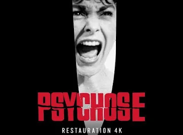
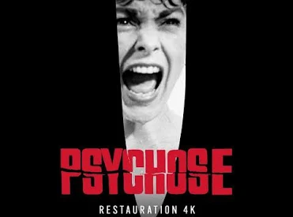
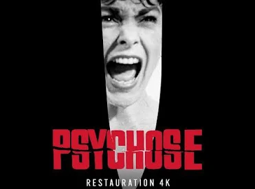
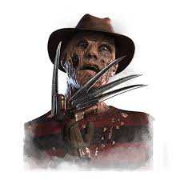
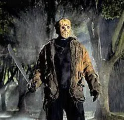
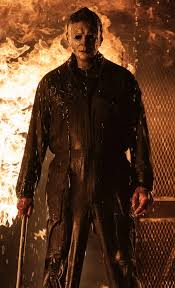
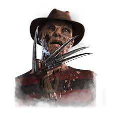
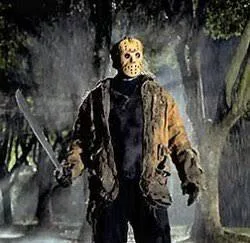
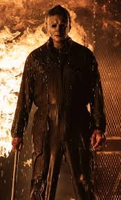

Dans le cinéma d'horreur, il existe de nombreux films cultes comme Scream, Vendredi 13, L'Exorciste ou encore Psychose.

Ces films ont pu existé gràce a des réalisteur connus comme : Alfred Hitchcock – Psychose, Les Oiseaux, John Carpenter – Halloween, The Thing, Wes Craven – Scream, Les Griffes de la nuit ou encore George A. Romero – La Nuit des morts-vivants.


Voic quelque personnages connus dans le monde de l'horreur comme: The Ghostface-Scream, Jason Voorhees-Vendredi 13, Michael Myers-Halloween ou encore Freddy Krueger-Les Griffes de la nuit.
 





Voici une vidéo sur "Comment les films nous font peur?"